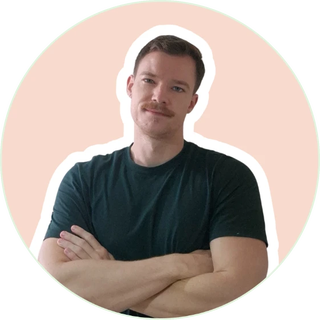

Antoine Collard
Co-founder · from Belgium
Tech & design
“I started with Japanese, fell in love with kanji, and switching to Chinese felt natural. Characters are my thing: I know far more than I'll ever need, and my handwriting beats most native speakers'.”
6+ years in Taiwan and a Master's taught in Chinese at National Taiwan University. Antoine builds everything you see at Mandarin Zest, from the website and tools to the design of our materials.